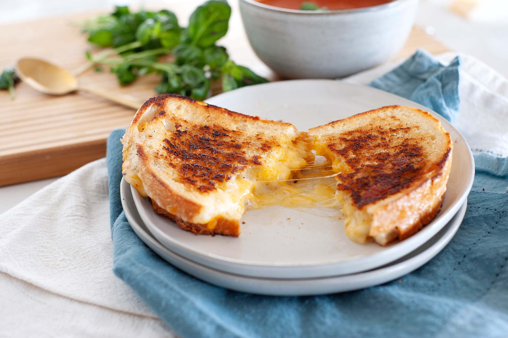

Grilled Cheese Sandwich
This sandwich is very easy and simple to make, it won't take you more than 11 minutes to make, with ingredients that you can find in any supermarket.
Preparatión time
- Total: Approximately 11 minutes.
- Preparation: 7 minutes.
- Cooking: 4 minutes.
Instructions
- Mix mayonnaise and optionally a chili sauce in a small bowl.
- Place 4 slices of bread on a surface. Spread the mayonnaise on the bread slices and form a layer with the onion, coriander and cheese, then top with another slice of bread.
- Spray with cooking spray on top of each sandwich and place them in a saucepan on a grill or skillet. Cook for 2 minutes, then turn and repeat the same operation.
- Serve on a plate and try to eat it hot so you can enjoy the melted cheese.
Ingredients
- 1 tablespoon omega-3-enriched light mayonnaise
- 8 slices extra-light whole-wheat bread with fiber
- 4 thin slices of red onion
- 1/4 cup cilantro
- 1/2 cup (6 oz) extra-sharp shredded cheddar cheese, low-fat
Nutrition
| Calories | 248kcal |
| carbs | 21g |
| Protein | 15g |
| Fat | 11g |